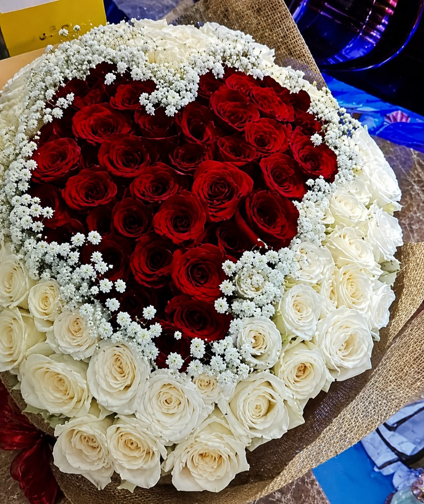

Let's Find
Home Again
Ada beberapa hal yang mungkin tidak pernah berhasil kusampaikan lewat kata-kata. Maka izinkan aku menyampaikannya melalui perjalanan ini.
Begin Journey
Scroll
Ada beberapa hal yang mungkin tidak pernah berhasil kusampaikan lewat kata-kata. Maka izinkan aku menyampaikannya melalui perjalanan ini.
Begin JourneyAwal dari segalanya. Titik balik di mana dua takdir memutuskan untuk menyusuri jalan yang sama.


Janji suci di hadapan altar kehidupan. Sebuah komitmen sakral untuk menyatukan visi, mimpi, dan tujuan masa depan.
Melalui riak gelombang ego, kesalahan, dan dinamika pendewasaan yang menempa kita berdua menjadi pribadi yang lebih kuat.


Menyadari arti "home" yang sesungguhnya. Berdiri dengan kedewasaan penuh untuk menjemput harapan baru.
Caption Memori